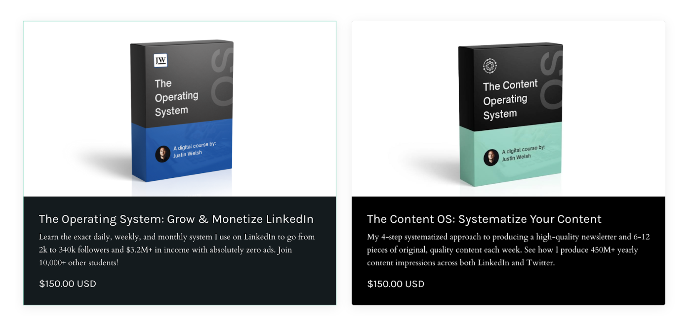
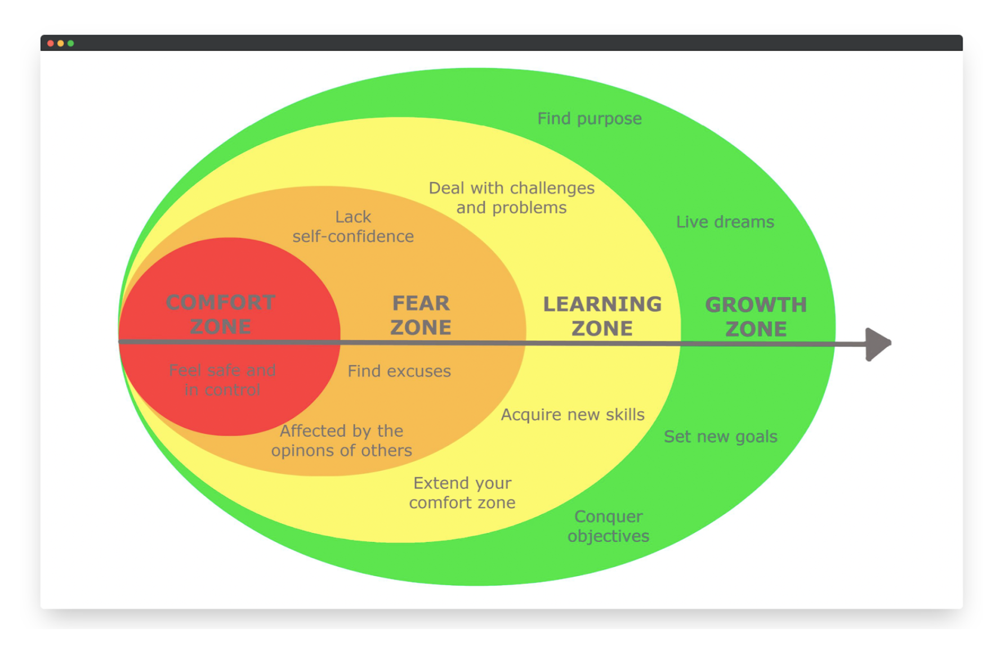
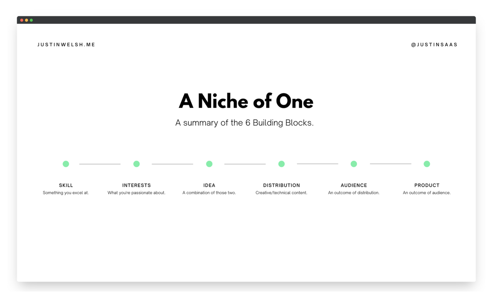
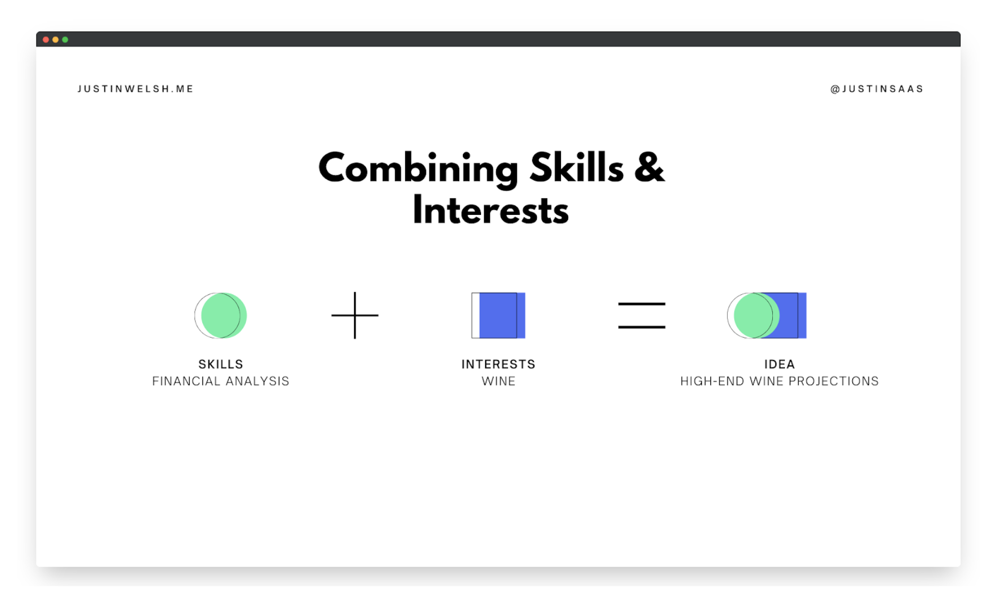
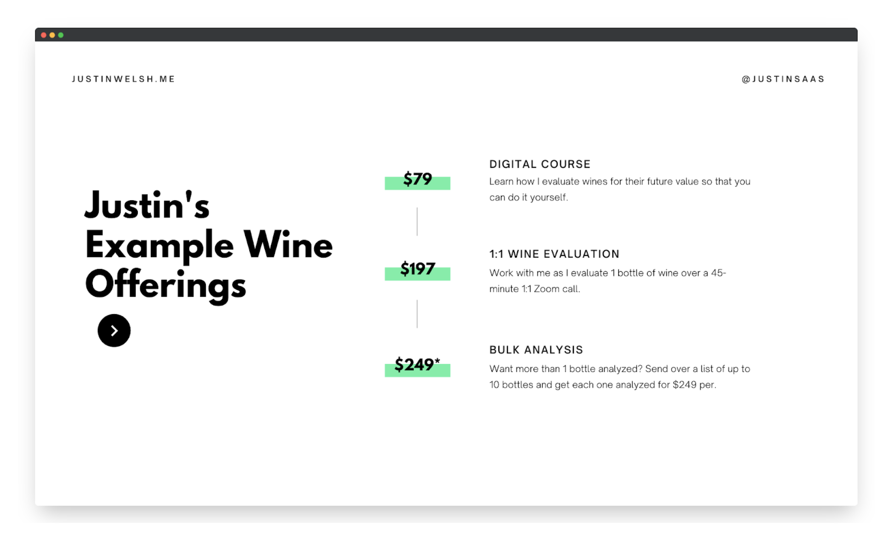
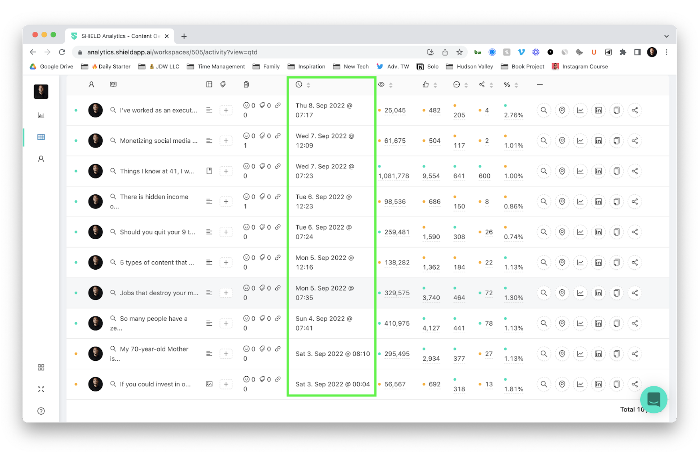
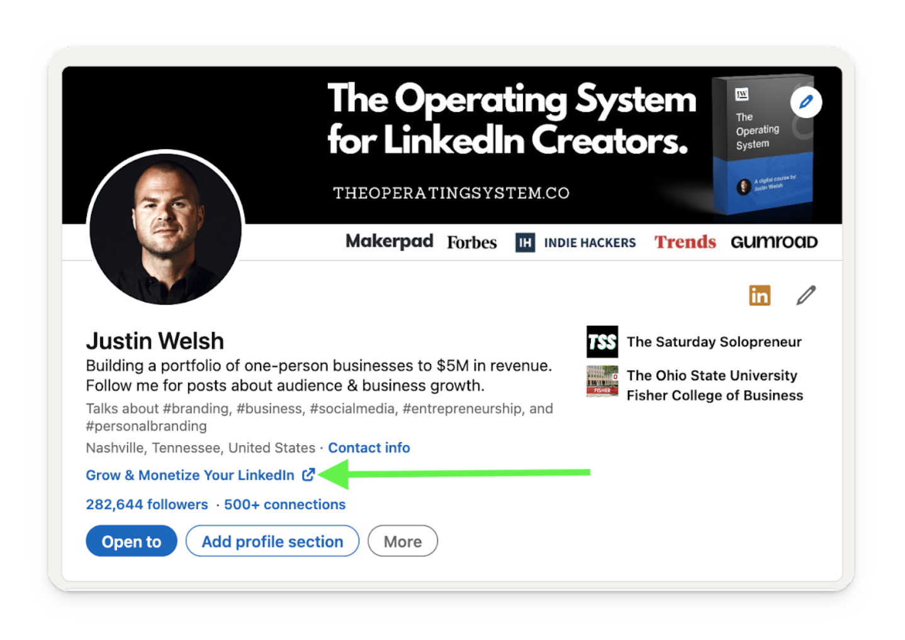
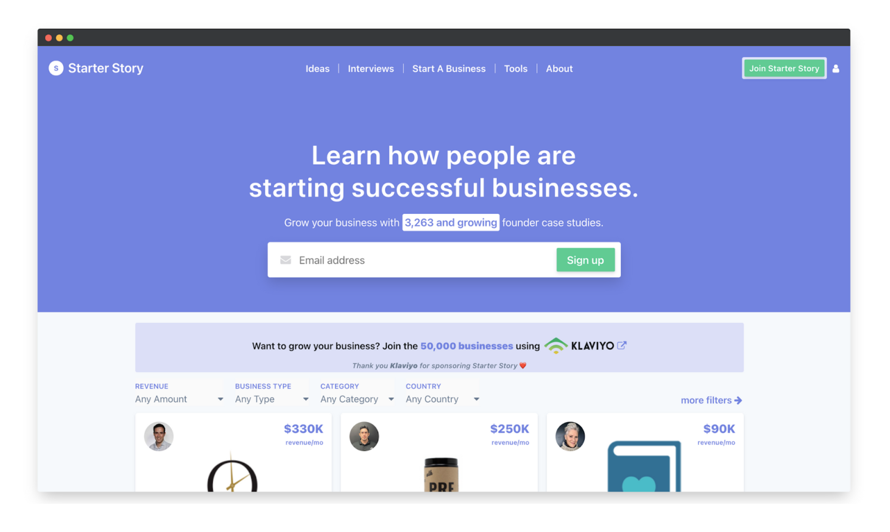
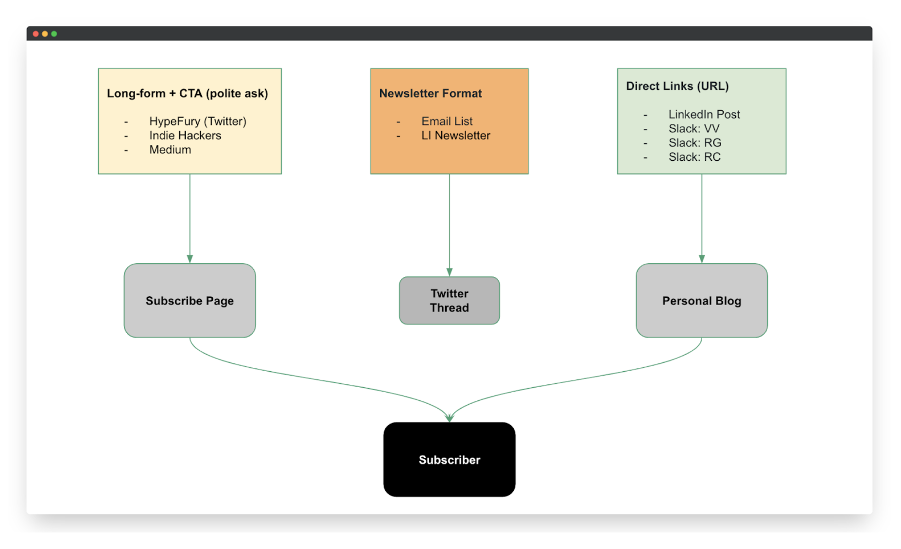

I've made over $4M in the last 4 years online, including over $2M on digital course sales in the last 2 years.
I put together this free guide to share a lot of what I've learned. I'll be updating it continuously as I learn and remember more.
This guide breaks down different ways to make money online and captures learnings from my actual work, wins, and losses.
If you want updates, simply subscribe to my newsletter.
- Part 1: 7 ways to make money online
- Part 2: My own portfolio of online one-person businesses
- Part 3: 16 tips for making money online from what I’ve learned
I hope you find this helpful.
Don't overcomplicate making money online
Most people want to make money online, but they make the process harder than it needs to be.
This can prevent them from getting started at all.
After building a portfolio of one-person businesses to over $4M in revenue, I’ve learned that making money online doesn't have to be complex.
With this in mind, let's dive into 7 possible income streams to make your first dollar on the internet.
7 ways to make money online
- Offer your skill as a service
- Create and sell digital products
- Offer Software as a Service (SaaS)
- Do cohort-based coaching
- Monetize a personal blog
- Become a consultant
- Seek out sponsorships
1. Offer your skill as a service
One of the best ways to make money online is by selling your skill as a service.
I like this method because upfront costs are low, but the earning potential is significant.
Let's say you're new to solopreneurship and don't have the capital to start a traditional business, but your friends, family, and past employers have mentioned you're an excellent writer.
You can monetize that skill by selling writing services:
- Write ad copy for businesses
- Ghostwrite blogs for CEOs and founders
- Produce written social media content for brands
The list goes on.
Depending on what skill you're selling, you likely don't need much to get started. For example, freelance writers can manage with a reliable laptop and an internet connection.
Upfront time investment
Be ready to invest a full day into optimizing your LinkedIn & Twitter profiles to attract ideal clients.
Then set up a service page showcasing your offering.
Difficulty level
The work itself can be easy if you're great at what you do. But getting clients can be tough in the beginning.
Having an established presence and credibility helps you land gigs easier and quicker. If you have the skill but no audience, you'll need to build a social media following on one platform in the beginning.
I recommend LinkedIn or Twitter for creative services like writing. But some service offerings may attract clients on different platforms (e.g. photography or visual design on Instagram).
Don't be afraid to experiment on a few channels to see which one gets you the most traction. Once you figure that out, I'd focus on building there before branching out.
Business ideas for service providers
- Marketing consultant
- Freelance writing
- Virtual Assistant
- Graphic design
- Photography
- Online tutor
- Web design
- Data entry
2. Create and sell digital products
Many freelancers I know eventually create digital products once they've monetized their skills over time.
This revenue stream works well if you build a personal brand while freelancing. When you share your learnings publicly online, people resonate, gain trust, and want to buy from you.
In my early days of solopreneurship, I offered consulting services to clients in the SaaS industry. While doing this, I committed to a daily writing habit and consistently showed up on LinkedIn.
What came out of it was incredible:
- People enjoyed the content I shared
- People trusted me as I built authority
- People were intrigued by my journey
- People asked me questions about creating content and building a personal brand
From there, I saw an opportunity to create affordable digital products.
So I packaged up everything I learned from the past 4 years of solopreneurship into 2 courses: The Operating System and The Content Operating System.

The Operating System is for people wanting to grow their LinkedIn presence and eventually monetize it.
In this course, I go over tips on how to:
- Write compelling social media posts
- Develop meaningful relationships
- Get inbound and outbound leads
The Content Operating System is for those wanting to create and scale content.
The lessons focus on the systems I use to produce quality content quickly — not just social media posts but also blog articles, guides, newsletters, you name it.
Upfront time investment
The time investment comes down to what kind of digital product you're offering. A course may take a full month or more to make, while checklists and templates can be done in a day.
Difficulty level
Creating one-off digital products is generally less time-consuming than full courses. I recommend starting here if you're thinking about making money online this way.
You could create templates, checklists, and guides that sell for $10-50 on your website.
The beauty of selling digital products is that once they're made, you can sell them indefinitely and make passive income.
But there's a catch:
You need a loyal audience with pain points (that you can address).
If you don't have a social media following, I suggest building that before creating any digital products. The last thing you want to do is put in all the work but have no one to sell to.
Once you have the audience, it becomes much easier.
When creating my courses, I kept things simple. The content and lessons are what people pay for, not fancy videos with an even fancier background.
Remember, it's possible to produce amazing value without spending a fortune on shiny objects like an expensive microphone or editing software.
Don't overthink it — just do it!
Digital product ideas
- Templates
- Checklists
- Courses
- eBooks
- Guides
3. Offer Software as a Service (SaaS)
What I love most about SaaS is its recurring revenue model. Instead of a one-time sale, you're building relationships with your customers, and providing them with continuous value. In return, you get consistent income.
Imagine you notice a gap in the market. Maybe small businesses that struggle with scheduling appointments, and you think, "Hey! I can create a simple tool to solve that." There's your SaaS idea.
Here's how you can monetize this:
- Create a subscription-based tool for appointment scheduling
- Offer a basic version for free and premium features at a cost
- Set up integrations with other popular tools to enhance functionality
Upfront time investment
Building a great SaaS product requires a significant time investment upfront. You'll need to conceptualize the software, develop it (or hire developers), and then test it rigorously.
But remember, once it's live and you've got users, the feedback loop can help you refine and improve without needing to start from scratch.
Difficulty level
I won't sugarcoat it. This isn't the easiest online business venture. Developing a SaaS product requires technical know-how or the capital to hire those who do.
But the payoff? It can be massive.
Building an audience for your SaaS product is crucial. Platforms like Product Hunt or even LinkedIn can be goldmines for initial traction. And don't forget about content marketing — offering valuable insights related to your product niche can draw in potential users.
Business ideas for SaaS entrepreneurs
- Virtual event platforms
- E-commerce optimization tools
- CRM systems for niche markets
- Social media analytics platforms
- Online booking systems for niche services
- Task automation tools for specific industries
4. Do cohort-based coaching
One of the emerging trends in the online education space is cohort-based coaching.
It combines the best of both worlds: the personal touch of live coaching and the scalability of online courses.
You're essentially guiding a group of people through a learning journey together, fostering community and accountability.
Got a knack for digital marketing? Instead of coaching people one-on-one, gather a group and take them through a structured, time-bound program.
Here's how you can leverage this:
- Design a 6-week program on digital marketing strategies
- Incorporate live sessions, Q&A's, and group activities
- Use platforms like Zoom or Discord for live interactions
- Offer additional resources, templates, and tools to enhance the learning experience
Upfront time investment
Crafting a cohort-based course requires a blend of curriculum design, content creation, and community management. This could take weeks or months, depending on how extensive you want it to be. But once it's ready, you can run the program multiple times, making minor tweaks as required.
Difficulty level
While it's less tech-intensive than creating a SaaS, cohort-based coaching demands strong interpersonal skills and industry expertise.
One of the main challenges is ensuring every cohort feels as engaged and valued as the last. But with the right energy and commitment, the rewards — both in terms of impact and monetary gain — can be substantial.
Before you launch your cohort-based course, focus on building a loyal audience. Platforms like LinkedIn, Twitter, or even niche-specific forums can be your best friend here. Share valuable insights, engage in discussions, and position yourself as an authority in your domain.
Cohort-based coaching business ideas
- Creative writing workshops
- Digital marketing boot camps
- Entrepreneurship and startup masterclasses
- Health and wellness transformation programs
- Personal development and life coaching sessions
- Niche-specific skill training (e.g. podcasting, video editing, photography)
5. Monetize a personal blog
Many social media influencers also have personal blogs where they make extra money through advertisements, sponsorships, and affiliate marketing.
First, you can display ads on your blog and earn money when people view or click on them.
Sponsored content is another popular way of monetizing a personal blog.
Here's how it works:
Brands pay you a fixed amount to write a blog to promote their products or services. Often, they'll also provide a unique promotion code for you to include in the blog post. If someone makes a purchase with your code, you get a commission.
Besides paid ads, sponsorships, and affiliate marketing, you can sell your own products. This could be online courses or print-on-demand goods, depending on what your audience will find valuable.
Upfront time investment
Designing and launching a WordPress blog from scratch may take a day or a month, depending on your experience.
But after setting it up, remember that search engine optimization for new websites can take time to bear fruit.
Before thinking about monetizing, you'll need to:
- Create high-quality content to rank well on search engines
- Gather social proof to attract worthwhile partnerships
- Build an audience somewhere to funnel people over to your blog
Difficulty level
If you enjoy writing online, then running a personal blog may be your next passion project.
But that doesn't mean it'll be easy. Blogging involves more than just creating content.
If you're only good at writing, you may need help in other areas:
- Troubleshooting
- Optimizing site speed
- Ensuring mobile-friendliness
- Website design and graphics
Blogging business ideas
- Paid ads
- Sponsorships
- Affiliate marketing
- Paid guest blogging
- Selling your own products
6. Become a consultant
Consulting is one of the oldest professions in the book. But in this digital age, it's taken on a fresh, modern twist.
At its core, consulting is about providing expert advice in a specific field. In today's interconnected world, you don't need to be tied to a big-name firm to make waves. You can be a solo consultant, leveraging your expertise and experience to guide businesses and individuals.
Let's say you've spent a decade in the eCommerce world. You've seen the ins and outs of it. Businesses would pay a premium for that knowledge.
Here's how you can dive in:
- Identify your niche — eCommerce strategies for small businesses, perhaps?
- Offer tailored solutions, from optimizing online stores to crafting marketing campaigns
- Share your industry expertise through paid workshops or webinars
- Work with industry peers to expand your reach and credibility
Upfront time investment
While you won't need to create a product from scratch, you'll want to invest time in branding yourself.
This includes:
- Refining your online presence
- Crafting a compelling portfolio
- Creating valuable content that showcases your expertise
Difficulty level
To be a good consultant, you need a deep understanding of your chosen niche. But beyond that, it's about communication, problem-solving, and relationship-building.
The initial challenge is in building a client base. But once you've got a few success stories under your belt, word of mouth can work wonders.
To gain traction in the beginning, lean on platforms like LinkedIn. Engage in relevant groups, share your insights, and don't shy away from showcasing your successes.
Consulting business ideas
- HR and talent acquisition strategies
- Branding and visual identity consulting
- Customer experience and journey mapping
- Digital transformation for traditional businesses
- Sustainability and eco-friendly business practices
7. Seek out sponsorships
When you hear the word "sponsor," you might think of athletes wearing branded gear or celebrities endorsing products. But sponsorships have evolved and are no longer just for the famous.
I've personally experienced the power of sponsorships. For instance, in my newsletter, I've partnered with brands that align with my values and resonate with my audience.
It's been a win-win:
They get exposure, and I get support to continue delivering exclusive, value-packed content.
Ready to tap into this?
- Identify what you offer: Do you have a podcast, a blog, a YouTube channel, or a newsletter with active subscribers?
- Understand your audience: What are their interests? What goods or services would they find useful?
- Pitch to brands: Craft a compelling proposal showcasing your reach, engagement rates, and audience demographics
- Ensure alignment: Only partner with brands that resonate with your values and your audience's interests
The beauty of sponsorships is that they can be super flexible. Whether it's a shoutout in a podcast episode, a dedicated newsletter segment, or a branded video — the possibilities are endless.
Upfront time investment
To attract sponsors, you need a well-documented media kit.
This includes:
- Details about your audience
- Engagement metrics
- Past sponsorship successes
- Potential collaboration ideas
It might take some time to put together, but it'll be your ticket to working with the right partners.
Difficulty level
The concept of sponsorships is pretty straightforward as long as you have a platform or channel with a dedicated audience.
Remember, brands want to see engagement, not just numbers. Once you've built that trust and community, sponsorships can be a consistent and ethical revenue stream.
For me, platforms like LinkedIn and Twitter have been instrumental in connecting with potential sponsors.
Sponsorship opportunity ideas
- Blog post collaborations
- Podcast episodes or series
- Newsletters in niche domains
- Webinar or live event partnerships
- Social media takeovers or shoutouts
My own portfolio of online one-person businesses
I’ve covered a range of ideas on how to make money online.
Though haven’t personally pursued all of these revenue streams, I can give you an insight into what my online business looks like.
My approach has been to build a portfolio of revenue streams.
Treating my career like a Venture Capitalist and knowing that one would hit big.
Here was my revenue breakdown for 2022:
My business operates on a 94% margin and I’ve spent $0 on ads.
How?
I’ve built my personal brand and a following of over 800K on social media platforms like LinkedIn and Twitter.
So, here are my top 16 lessons from the past 3.5+ years of making money online:
16 tips for making money online
- Skip the "Get Rich Quick" stuff
- Recognize where you are in the journey
- Be prepared to face adversity
- Think at a macro-level
- Ideation is difficult but there are unique ways
- Create an audience of prospects with Moneyball
- Build an ecosystem of creators
- Capture people that are interested
- Have an outcome in mind with your content
- Bring people into your world vs. social media
- Learn how to drive traffic
- Start with a service business to learn more about your customers
- Systematize your service growth
- Move to digital products
- Timebox production
- Keep it short, simple, and focused on one outcome
1. Skip the "Get Rich Quick" stuff
To start, there are literally zero get-rich-quick schemes.
If someone is selling you that and you're buying? You're the fool.
Creating income online is a long game. If you want to play, have some patience.
2. Recognize where you are in the journey
It's important to recognize that everyone has valuable knowledge to share.
Don't compare yourself to the people you idolize who are making money online. Not everyone is as far along on their journey as Gary Vaynerchuk.
Think about the things you've learned on your journey over the last 2-3 years that would be valuable to someone who is behind you on that very same journey.
That's where the magic is.
3. Be prepared to face adversity
When you start creating content to attract potential customers, know these three things:
1) Nobody will care about you
2) You will get ridiculed at some point
3) Somebody will say something mean to you
If you can get over those three things, you have thick enough skin to get started.
Remember, everything worth doing is outside of your comfort zone.

4. Think at a macro-level
There are 7.67B people in this world. You can definitely sell 5, $54 digital products each day and make $100k+ per year, automated.
The people that win at this game are the people that get started and take action.
Nobody is doing this "perfectly". Everyone is figuring it out as they go.
Why not you?
5. Ideation is difficult but there are unique ways
There are several ways to think of an idea:
1) Think of a product (terrible way)
2) Solve your own problem (a better way)
3) Create unique content that lets you own a micro-niche with very limited competition. I often refer to this as a "niche of one". (best way)

A niche of one is a unique combination of skills and interests rolled into one idea and then distributed through highly creative or technical content.
Example:
Let's say you’re a financial analyst and your interest is in wine. You could use your financial knowledge to project the value of one high-end wine bottle each morning.

It would be easy to create products and services with that simple idea.
For example, some people might enjoy a digital course teaching them your method behind wine price projections.
Others might want a 1:1 Zoom call where you apply your formula to bottles in their collection together, while some would likely just want to purchase a financial analysis of multiple bottles, without the video call.

Once you have your idea, it's important to create an audience of prospects that are likely to pay for your products or services.
6. Create an audience of prospects with Moneyball
The best way to create an audience is to choose one social channel and become a master at it.
The best way to become a master is to start by playing "Moneyball".
Moneyball means just getting on base every day i.e. creating content each day and not trying to hit viral home runs.
Compound interest is what matters in content creation.

7. Build an ecosystem of creators
It's helpful to create an ecosystem of other relevant creators in your space.
Who else is aiming at your niche audience with a slightly different approach?
Make sure you interact with their content on a regular basis. Tether yourself to larger accounts and be active in their comments.
Turn on notifications and get to their content when it happens, adding a tremendous amount of value. Your goal is to be the most relevant comment on a piece of content that is seen by prospective customers.
You can visit my profile here to turn on notifications for my content if relevant to you.
8. Capture people that are interested
Design your social media profiles to capture people that are interested in your content.
If you talk about a niche topic, people should see images and copy on your profile pages that align with that.
Feature your work and website where possible and be very forward with what you write/Tweet/create about.
Your profile pages should be interesting enough to have people want to click the "follow" button.
Leverage the featured section (LinkedIn) and pinned Tweet (Twitter) to show off your expertise at a much deeper level.
There's also a new LinkedIn Profile URL that you can use to show off a website, newsletter, product, or service.

9. Have an outcome in mind with your content
When you are creating content, think about it this way:
1) What outcome are you shooting for? Purchases? Dopamine? Email subscribers? Know your end game.
2) Is your content laser-focused on bringing people to your outcome?
3) Are you writing/recording/creating interesting enough content to get people to stop and listen?
4) Are your opinions boring, vanilla, middle-of-the-road, or do you have something interesting to say? Are your opinions strong?
Note: If you're struggling to create content that resonates, build an audience, network with other creators, and find your tribe, I highly recommend my course, The LinkedIn Operating System.
Right now, in 2023, LinkedIn is the easiest place to build a massive audience and business online. Join 14,000+ other students who have rated it 4.98 out of 5 stars.
10. Bring people into your world vs. social media
Do you have a landing page or website where someone can express interest if they want to learn more?
If not, go to carrd.co and whip up a simple landing page.
Move fast and cheap. Don't worry about getting everything right.
Here's a great landing page example from Starter Story:

11. Learn how to drive traffic
Once you have v1 of a landing page, then it's time to drive some traffic there.
Since you're already creating content for your primary social channel, why not start to drop that content in other places where people might be spending their time?
Places like:
- Reddit
- Twitter
- LinkedIn
- Medium
- Hacker News
- IndieHackers
- Facebook groups
- Private Slack channels
- Etc.
Every channel has its own algorithm and rules.
If you want to build a predictable, successful, and consistent content strategy, join 6,000+ students in my affordable course, The Content Operating System.

12. Start with a service business to learn more about your customers
If you can generate enough impressions on your content and start growing a nice following, you can build a small service business.
A service business is usually defined as trading your time for money and providing a service.
There are 3 levels when building out your service business:
1) Level 1: Low-cost service business with the goal of learning and acquiring testimonials.
2) Level 2: An "average cost" service business where your goal is to focus your niche to a very particular client base that you serve best and...
3) Level 3: A high-cost service business where you provide incredible service to a micro-niche and charge top dollar.
13. Systematize your service growth
The best process for moving through these 3 levels is called FITI:
- Feedback: get feedback from clients.
- Iteration: use that feedback to improve your business.
- Testimonials: get testimonials to improve social proof.
- Increase: increase your prices the more testimonials you receive.
One challenge of running a service business is how many manual tasks are required.
Make sure that you use low-cost, no-code (if you can't code) software tools to make your job easier.
Here are some of my favorites:
14. Move to digital products
Once you've niched down to your favorite customers and raised your rates, it's a great time to build out digital products that solve the common challenges you see other prospects having that either don't fit your niche or can't afford your services.
15. Timebox production
If you want to create a good digital product, timebox your production to 21-28 days and help those prospects solve that one common challenge.
The more common challenges you find, the more short, time-boxed courses you can create.
16. Keep it short, simple, and focused on one outcome
Remember, brevity is your friend.
Nobody wants to solve their problem in 10 hours.
Make your course 60-90 minutes and price it at a price that you think is reasonable and you would feel comfortable paying.
Make sure that the course is focused on solving one, big, problem your customers have talked to you about.
Don't guess!
Take a customer from point A to point B in 60-90 minutes and you'll have a satisfied group of paid students.
Next steps to start making money online
In 2023, nobody should rely solely on a full-time income.
Fortunately, there's no shortage of ways to make online money.
You just need to pick something that interests you, take the first step, and stick with it.
Want to write and make good money doing it?
Write your first spec piece. Publish it on Medium. Share it on social media for the world to see.
Dream of opening an eCommerce store?
Create art. Take photos of it. List it on Etsy and see how things go.
Starting an online business requires some experimentation, so don't be afraid to fail and learn.
Need more inspiration and guidance? You may find my free guides and video courses useful.
That's it for now.
Get out there and turn those dreams into reality.